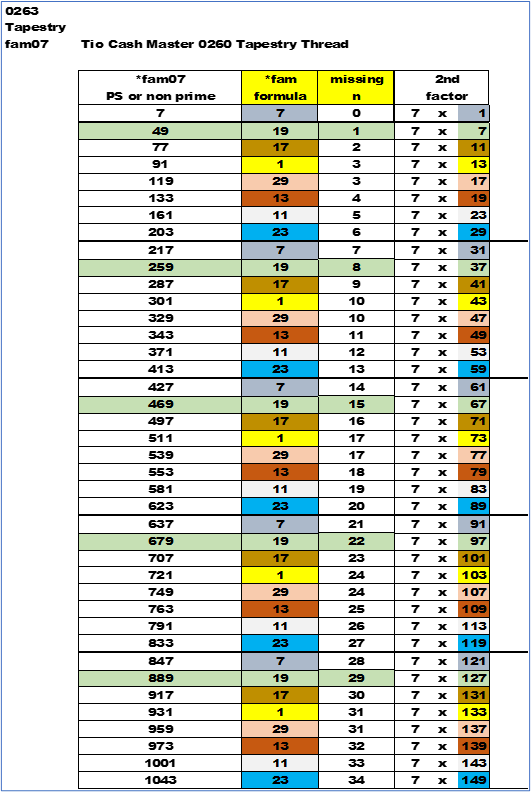

Where Are We And What Do We Know ?
Every time I flip the coin , it lands on its side . . .
I have not found a formula to find primes. I am close. It is just over the horizon.
I can see it , I can feel it , I can smell it , I can almost taste it. But , I can't touch it.
What is within our reach , we have difficulty grasping . . . I see the Master's Loom , it is making a tapestry. There are eight (8) colored threads , one for each equation. And , each prime number makes a different line of multi colors. Each prime number found starts a new thread line. Each colored thread is being woven through a white fabric. The different colors are on the same line , but they pop up at their own intervals. See Cosmos sections.
I wish I had just a little bit more . . .
Cosmos Formula
Take a non-prime , measure the last digit , apply the proper *fam formula , and find its n (really a missing n (MN)) in the Cash Pile . Sort by the *fam equation and the MN , then all the factors will be grouped as follows. The MN will grow by the value of the first factor. The factor's second digit will grow by thirty (30). The non-prime numbers will grow by a constant of the first factor times thirty (30).
Sorting by the *wildcard formula and then the MN (missing n) will bring order to the way non-primes are generated and spaced apart.
In the below chart and on the next page from an earlier chapter follow the *fam19. MN grows by 7 , 2nd factor grows by 30.
|
PS |
*fam |
MN |
*fam07 |
2nd
factor |
|
49 |
*fam19 |
1 |
7 |
7 |
|
259 |
*fam19 |
8 |
7 |
37 |
|
469 |
*fam19 |
15 |
7 |
67 |
|
679 |
*fam19 |
22 |
7 |
97 |
|
889 |
*fam19 |
29 |
7 |
127 |
Up to this point it is an exercise in finding all numbers prime and non-prime.
